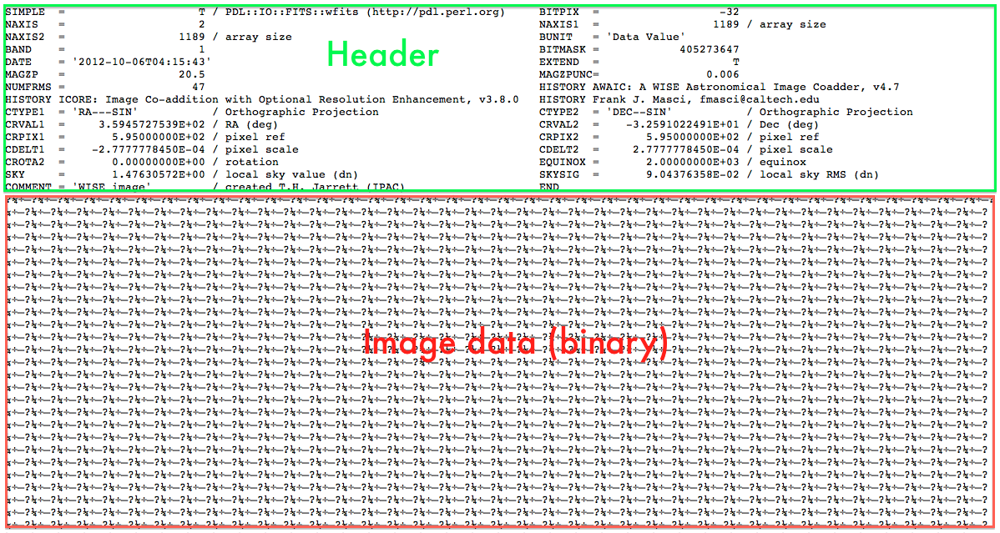

14.3 Reading Fits Files#
Flexible Image Transport System (FITS) files are used to store astronomical images. As seen in the figure below, a FITS file is made up of two parts: an ASCII header and a binary image. The header usually contains important metadata that describes photometric and spatial calibration information.

Some of the more important header information includes:
NAXIS1,NAXIS2: the number of pixels along the axes.CTYPE1,CTYPE2: coordinates used for the axes (often celestial coordinates).In order to have a unique (RA, DEC) coordinate for each pixel in the image, it needs to be astrometrically calibrated. The three most important astrometry keywords (for each axis) are:
CDELT - the size of a pixel, usually given in degrees. For the header shown on the previous slide, CDELT1 = -2.777e-4 degrees = -2.777e-4 x 3600 = -1 arc second.
CRPIX - the pixel number of a reference pixel whose RA/DEC is given by the corresponding CRVAL keyword.
CRVAL - the RA/Dec of the reference pixel (as specified by CRPIX).
Reading and Writing Fits Files#
The astropy.io.fits sub-package is used to read-in FITS images.
from astropy.io import fits
You can read FITS files using fits.open():
hdu_list = fits.open(filepath)
hdu = hdu_list[0]
This function returns a list of Header Data Unit (HDU) objects (one per image in the file). In this example we will use the first HDU object in the list.
The header from an HDU can be accessed using the header property.
For example getting the heading from the first HDU in the list:
hdr = hdu.header
The Header object contains all the header properties from the FITS file.
This object has a dictionary like interface for accessing header properties, for example you can get or set the property SKY by using hdr['sky'].
The image data can be accessed from the HDU by using the data property.
For example, getting the image data from the first HDU in the list:
img = hdu.data
The image data is in the form of an n-dimensional array (depending on the dimensions and values of the image data).
Alternatively, the header and image data can be read directly from the file using the fits.getheader() and fits.getdata() functions.
You can save FITS files using the fits.writeto() function. The call signature for this (with ony arguments of immediate interest) is:
fits.writeto(filename, data, header=None, overwrite=False)
with arguments:
filename- the filename of the file you are writing todata- the image dataheader- the header (HDU) of the FITS file. IfNone, then a header is automatically generated.overwrite- ifTrueoverwrites the file if it exists. IfFalsethen it raises an exception if the file exists.
WCS and Plotting#
The WCS class from the astropy.wcs sub-package can be used to create an object to represent the world coordinate system (WCS) transformation of an image.
from astropy.wcs import WCS
For example, the WCS object can be used to translate pixel coordinates (the indices of your image data) to world coordinates. This is most easily achieved using the WCS.wcs_pix2world() which takes an array of pixel coordinates as an argument. For pixel coordinates \((a_0, a_1), (b_0, b_1), (c_0, c_1)\), the function can be used as follows:
wcs = WCS(hdr)
ref_coords = wcs.pixel_to_world( np.array([ [a0, a1], [b0, b1], [c0, c1] ]) )
You can make plots using the WCS object. You can read further on this in the official Astropy tutorial Making plots with world coordinates (WCSAxes). An example of this is presented at the end of Exercise 14.3.
Creating New Fits File#
To create a new fits image from data, you can instance a fits.PrimaryHDU class, which will automatically generate a header object based on the data. The image data and header object can be used when writing the file out.
hdu = fits.PrimaryHDU(image_data)
hdr = hdu.header
If you have an existing fits image and you want to create a new image from this, for example if you want to take a smaller slice of the image, then you can copy the existing HDU object:
hdu_new = hdu.copy()
Note that you may need to update certain header properties manually if you make changes to the image data. Be careful when changing values in the image data as this can affect the previous FITS image, though if you don’t need the previous FITS image, then a copy is not needed in the first place.